20 candidates for Emmet's technique library (session 3D, H-26). Each was found in your instruction books and ranked by how widely official models in the LDraw OMR join its key parts (1315 sets mined). Each picture is a render of my sketch of it in Emmet's DSL, which validates with no findings; an accepted sketch becomes the technique, with its tests and render, and a rejected one is dropped. Nothing is taken from the models' files or the books' pages (D-48). Every candidate starts as Accept: switch the ones you don't want, add a note if it helps, then copy your answers and paste them to Claude.
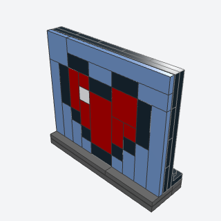
pixel_mosaic_panelAny pixel picture, given as rows of color letters, built flat in tiles on plates and stood up studs-out, one stud a pixel.
Any picture as pixel art (a game screen, a sprite, a sign, a logo): the agent writes the picture as rows of letters and a palette, and the helper tiles it largest-first and stands it up studs-out.
Note: The book builds the art on belt slats; the bracket stand (99780 along the bottom, panel resting on smooth tiles in front) is Emmet's, so it stands on any base. Tiles in rare colors may raise color_unavailable for the bigger sizes: the agent should pick palette colors 1 x 1 and 2 x 2 tiles come in.
x, y, z, rows, palette, backing, uprightbatch-12/pixel_mosaic_panel.py3070b + 3069b + 3068b + 99780 (some of its parts weren't confirmed from the book; I'd pin them when writing it)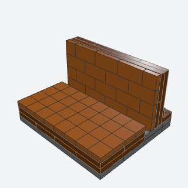
tile_brick_textureA pixel-art brick wall or ground block, drawn by the seams between small tiles on a darker backing, the mortar lines showing where the tiles meet.
Pixel-art brick walls and ground blocks for game scenes and screens, where the brick pattern is drawn by tile seams rather than by real bricks.
Note: Same bracket stand as pixel_mosaic_panel; could become a bond option of it. upright=False gives the flat block top.
x, y, z, length, rows, bond, brick, mortar, uprightbatch-12/tile_brick_texture.py3070b + 3069b (some of its parts weren't confirmed from the book; I'd pin them when writing it)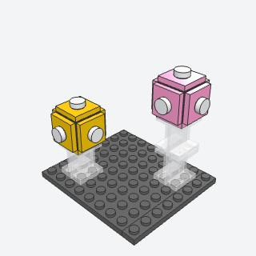
item_blockA game's floating prize block, a 2 x 2 cube faced on all four sides, held up in the air on a stand of clear panels.
The iconic floating prize block over a track or a level, at toy or figure scale.
Note: No generic printed '?' brick in LDraw (the only '?' print, 14769pt2, is black and silver), so the faces are jumpers with a round-tile mark; face_part lets the agent swap in a printed 2 x 2 tile. The core (two 67329 back to back) is Emmet's choice.
x, y, z, color, mark, lift, face_partbatch-12/item_block.py67329 + 87580 + 4864b (some of its parts weren't confirmed from the book; I'd pin them when writing it)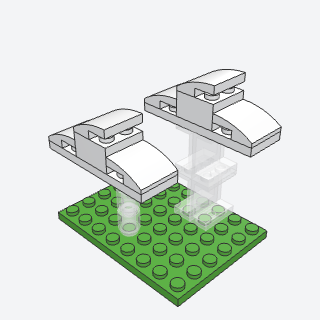
float_on_clearA thin stand of clear parts that holds a game object up in mid-air, so it seems to hover.
Anything that should hover (clouds, coins, blocks, a star) on a clear stand that nearly vanishes.
Note: The book's long clear bar into a round plate isn't offered; column and panels are.
x, y, z, height, kind, colorbatch-12/float_on_clear.py3062b + 4864b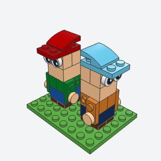
cube_head_characterA chunky brick-built game character, 2 x 2 studs, with a head as big as its body, arms on side studs, and a cap.
A chunky brick-built game character for toy-scale game scenes, karts, and dioramas, with a facing.
Note: The book uses a printed 1 x 2 eye tile and 4733 heads; here the eyes are two printed round 1 x 1 eye tiles on 11211 side studs and the cap is a 2 x 3 plate brim under a curved slope.
x, y, z, facing, skin, shirt, pants, shoes, capbatch-12/cube_head_character.py11211 + 98138p07 + 15068 (some of its parts weren't confirmed from the book; I'd pin them when writing it)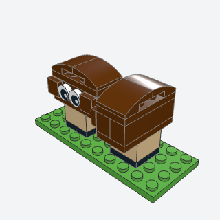
brick_enemyA small walking game enemy, a wide domed head over a short body on two feet, with eyes on side studs.
A small walking enemy to populate a platform level or a game diorama.
Note: The book's face is a printed 2 x 2 tile; here it's printed eye tiles on a 30414's side studs, the outer studs tiled over.
x, y, z, facing, head, body, feetbatch-12/brick_enemy.py30414 + 98138p07 + 15068 (some of its parts weren't confirmed from the book; I'd pin them when writing it)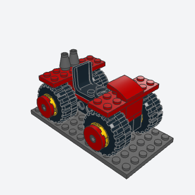
chunky_kartA stubby game kart on four big wheels with round hubcaps, 2 studs of body between the wheels and fenders 6 wide over them.
A ready toy-scale racing kart for a game-style scene, wheels nearly as tall as the body.
Note: The book's kart is a 2 x 8 plate core with 11211 side panels; the wheel mounts here (friction pins in Technic bricks 1 x 8, the same rim, tire, and hubcap as the batch-14 large_display_wheel) were the only big wheels I could get to seat: 6014bc03 on a 4600 seats but its bounding box collides with anything 2 wide above the axle, and 6014bc01 on 4870 never seats.
x, y, z, color, accent, frame_colorbatch-12/chunky_kart.py3702 + 55981 + 30391 + 15535 (some of its parts weren't confirmed from the book; I'd pin them when writing it)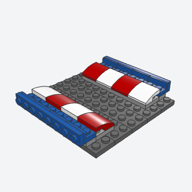
curb_rumble_stripA race track's striped edge curb, curved slopes in two colors in turn, with a low rail standing behind it on brackets.
Red and white curbs along a race track's edges, in any length and facing.
x, y, z, length, facing, base, stripes, railbatch-12/curb_rumble_strip.py15068 + 99780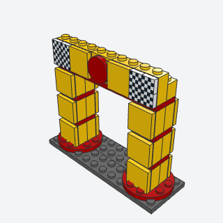
start_gantryA race's start and finish arch, two pillars faced with sign panels on round bases, carrying a beam with a banner of checkered flags either side of a round badge.
The start and finish arch over a race track, with sign-faced pillars and a checkered banner.
Note: The book builds each pillar lying down on Technic bricks with sticker tiles and stands it up, and uses gray truss parts for the beam; here the pillars are built upright on 22885s (the same studs-out faces) and the beam is a plate under a banner course. Sponsor stickers are plain tiles.
x, y, z, span, courses, color, trim, bannerbatch-12/start_gantry.py22885 + 3070bp1c + 60474 (some of its parts weren't confirmed from the book; I'd pin them when writing it)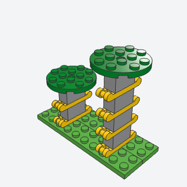
bolted_pillarA gray game pillar 1 x 2 with handholds sticking out both ends at every brick, topped by a round platform to land on.
Climbable gray pillars with a landing platform for a platform-game course.
Note: The book's handle plate is 3839b; in LDraw 3839b's handle sits off its body box and would not seat, so this uses 18649 (handles on opposite ends). The round platform sits on one jumper stud in the middle of the 1 x 2 pillar.
x, y, z, levels, color, handles, platformbatch-12/bolted_pillar.py18649 + 60474 + 3794b (some of its parts weren't confirmed from the book; I'd pin them when writing it)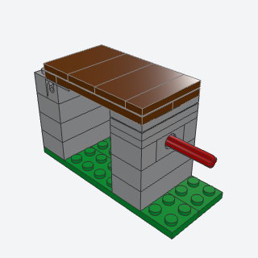
flip_bridgeA plank bridge on hinges between two pillars, with a push rod through the far pillar under its free end, the game trap that flips the bridge over when the rod is shoved.
A play-feature trap for a platform level: a hinged plank bridge that a push rod flips.
Note: Static: only the shut pose is modeled. The book's rod is an axle 10; here an axle 6, because a 10 drew a weak_connection warning. The bridge's free end rests on tiles so it can flip.
x, y, z, span, levels, color, planks, rodbatch-12/flip_bridge.py3937 + 6134 + 3700 + 3706 (some of its parts weren't confirmed from the book; I'd pin them when writing it)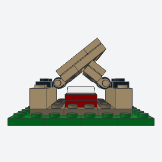
a_frame_tentA camping tent of two canvas panels leaning together on clip hinges over low side walls, open at the ends, with a sleeping bag inside.
A camping tent with a sleeping bag inside for a game camp scene.
Note: The canvas is the library's hinge_roof (clips on low walls, panels meeting at the ridge) rather than the book's two 6 x 6 plates clipped to a ridge bar. Viewed from the left, the open end.
x, y, z, length, canvas, floor, bag, pillowbatch-12/a_frame_tent.py4081b + 2540 (some of its parts weren't confirmed from the book; I'd pin them when writing it)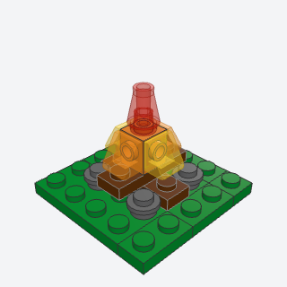
brick_campfireTwo crossed logs ringed by stones, with a brick of studs on four sides at the crossing carrying flames on every side and a glowing cone on top.
A small campfire for a camp, a forge, or any game scene that needs fire.
Note: The book's flame pieces are clip-on flames; here 1 x 1 cheese slopes in trans colors stand on the 4733's side studs, points up.
x, y, z, logs, stones, core, flames, tipbatch-12/brick_campfire.py4733 + 54200 + 4589 (some of its parts weren't confirmed from the book; I'd pin them when writing it)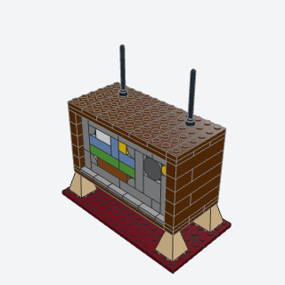
crt_cabinetAn old wooden television on four tapered legs, its gray front a studs-out tiled panel with a round-cornered screen and a strip of knobs, and two antennas on top.
A retro television (or radio, or monitor) with a screen that can show any pixel picture.
Note: The book rounds the screen with 27925 macaroni tiles and curved slopes; here 25269 quarter-round tiles in the screen's corners give the round corners. 3688 was never made in medium nougat, so the legs default to tan. The legs' center studs put them half a stud off the base's grid.
x, y, z, screen, wood, bezel, glass, knobs, legs, picture, palettebatch-12/crt_cabinet.py3688 + 25269 + 99780 + 14769 (some of its parts weren't confirmed from the book; I'd pin them when writing it)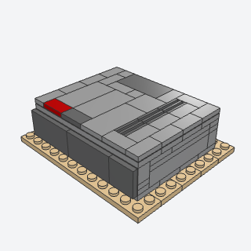
console_shellA boxy retro game console in two grays, a smooth dark band across its front on side studs and a tiled lid that lifts off, with a vent strip, a cartridge slot cover, and two buttons.
A boxy retro home console in two grays with a lift-off lid, for retro and desk scenes.
Note: The front band uses the library's snot_panel. No printed logo strip; the vent is grille tiles on the lid.
x, y, z, length, depth, body, band, buttonsbatch-12/console_shell.py87087 + 2412b + 87079 (some of its parts weren't confirmed from the book; I'd pin them when writing it)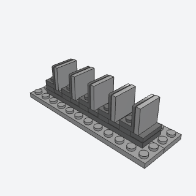
vent_finsA row of thin upright fins with gaps between, like a heat sink or a console's vent, from tiles on the side studs of brackets.
A finned vent or heat sink for consoles, appliances, engines, and sci-fi machines.
Note: The book stacks 99780 brackets at one-plate pitch; standing fin tiles there would sit on the next bracket's plate and studs, so here each fin is a 99207 face with a 2 x 2 tile, 2 studs apart, over a flat tile.
x, y, z, count, color, fins, basebatch-12/vent_fins.py99207 + 3068b (some of its parts weren't confirmed from the book; I'd pin them when writing it)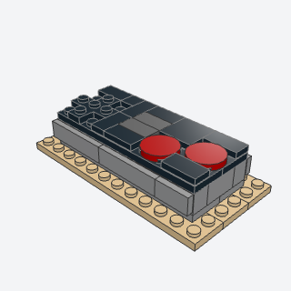
controller_slabA flat retro game controller, a slab of bricks with studs on the sides tiled smooth all round, a cross pad, two round buttons, and two small pill buttons on a dark face.
A retro game controller as a display piece or a desk prop.
Note: The cord (a flexible tube) is left out. 11211 stands in for the book's 52107 at the ends of the side rows.
x, y, z, body, face, pad, buttons, pillsbatch-12/controller_slab.py15397 + 30414 + 14769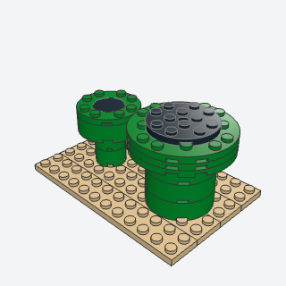
game_pipeA game's green pipe, a column of round bricks under a wider round lip with a dark opening on top.
A green pipe for a platform-game scene, small (2 x 2) or large (4 x 4).
Note: Not built in 3D in any of the books (pipes appear only in the TV's pixel art); written from the style rules. Barry may want another name: 'game pipe' is strongly tied to one game.
x, y, z, height, size, color, insidebatch-12/game_pipe.py3941 + 87081 + 11833 + 11213 (some of its parts weren't confirmed from the book; I'd pin them when writing it)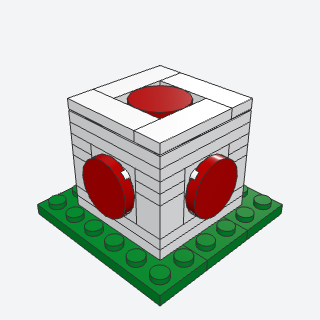
polka_dot_cubeA white cube 4 studs a side with a big round spot standing proud on every side face and on top, like a game's spotted cap.
A white cube with big red spots, the spotted-cap prop of game scenes.
Note: The core (22885 in the middle of each side, 1 x 1 bricks and plates at the corners) is Emmet's choice.
x, y, z, color, spotsbatch-12/polka_dot_cube.py22885 + 14769 (some of its parts weren't confirmed from the book; I'd pin them when writing it)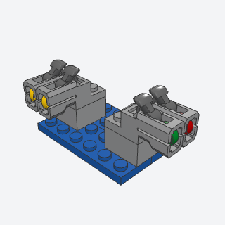
item_launcherA twin flick-fire launcher pod for a kart's nose or a turret, each barrel loaded with a round tile as the item it fires.
A flick-fire launcher pod for a kart's nose or a turret, loaded with a colored item.
Note: The book's shooter fires a shell part; the LDraw shooter here (69754, made in light bluish gray) fires a round 1 x 1 tile, placed as in the 69754c01 assembly so the tile can be any color.
x, y, z, facing, color, trigger, itemsbatch-12/item_launcher.py69754 + 69755 + 98138 (some of its parts weren't confirmed from the book; I'd pin them when writing it)